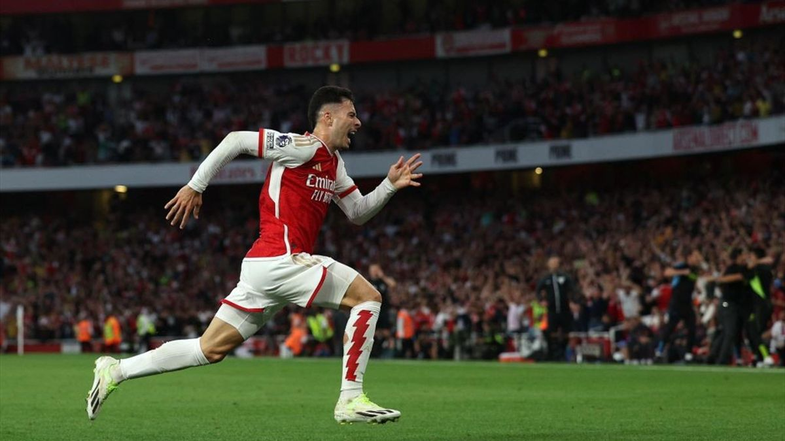

Le football, c'est bien plus qu'un simple sport à mes yeux. C'est ma passion, mon échappatoire, et ma source inépuisable d'émotions. Depuis ma plus tendre enfance, j'ai été attiré par le jeu, par le son d'un ballon qui cogne contre le gazon et par l'effervescence qui règne dans un stade plein à craquer. C'est comme si le football avait toujours fait partie de ma vie.
Les jeux vidéo sont bien plus qu'une simple distraction pour moi, ils sont ma passion profonde, mon moyen de m'évader et de m'immerger dans des mondes extraordinaires et fantastique. Depuis mon plus jeune âge, je suis fasciné par l'univers des jeux vidéo, et cette fascination n'a jamais cessé de grandir.